Inter phenazine electron transfer in solution
Scott Saunders
09_17_19
Intro
Methods
Reduced phenazine prep
100uM of PCA, PYO and PCN were reduced in PBS 50 (50mL) in the survival assay chambers. Electrolysis was performed overnight and the expected color changes were observed. Reduced phenazines were transferred into stoppered serum bottles. Serum bottles were transferred to the anaerobic chamber housing the plate reader.
Pre electrolysis (left) & post electrolysis (right)


Clockwise from the bottom right the chambers are PYO, PCA and PCN.
Electrolysis curves (left) & serum bottles (right)


Electrolysis seemed to go to completion and the color changes remained in the serum bottles upon transfer to the other chamber.
Plate reader measurements
Black walled, clear bottomed fluorescence 96 well plates were transferred 48 hrs in advance. Oxidized phenazines (100uM in PBS 50), and buffer (PBS 50), were transferred into the chamber 24 hours in advance and were shaken repeatedly to remove oxygen.
Wells were measured in two fluorescence channels 360/40ex,460/40 em and 360/40ex, 528/40 em and absorbance scans were taken from 300nm - 700nm in increments of 10nm. Wells were scanned with oxidized phenazines before mixing, and then repeatedly scanned in a timecourse following mixing.
Experimental design
Mixing 75uL of reduced phz (or buffer) with 75uL of oxidized phz (or buffer)
1. Buffer
- Buffer –> Buffer
- Buffer –> \(PCA_{ox}\)
- Buffer –> \(PCN_{ox}\)
- Buffer –> \(PYO_{ox}\)
2. \(PCA_{red}\)
- \(PCA_{red}\) –> Buffer
- \(PCA_{red}\) –> \(PYO_{ox}\)
- \(PCA_{red}\) –> \(PCN_{ox}\)
3. \(PCN_{red}\)
- \(PCN_{red}\) –> Buffer
- \(PCN_{red}\) –> \(PYO_{ox}\)
- \(PCN_{red}\) –> \(PCA_{ox}\)
4. \(PYO_{red}\)
- \(PYO_{red}\) –> Buffer
- \(PYO_{red}\) –> \(PCA_{ox}\)
- \(PYO_{red}\) –> \(PCN_{ox}\)
In this way we acquired spectra in the measured channels for all of the oxidized and reduced phenazines in isolation and in combination. Well conditions were repeated in triplicate.
Results
library(tidyverse)
library(cowplot)
library(viridis)
library(knitr)
library(kableExtra)
knitr::opts_chunk$set(tidy.opts=list(width.cutoff=60),tidy=TRUE, echo = TRUE, message=FALSE, warning=FALSE, fig.align="center")
source("../../IDA/tools/plotting_tools.R")
theme_set(theme_1())metadata <- read_csv("data/2019_09_17_solution_ET_well_metadata.csv") %>%
mutate(exp = ifelse(red == "PBS" | ox == "PBS", "ref", "exp"))Reference Spectra / values
df_spectra <- read_csv("data/2019_09_17_solution_ET_abs_spectra_1.csv",
skip = 1) %>% gather(key = "well", value = "intensity", -Wavelength)
df_spectra_meta <- left_join(df_spectra, metadata, by = c("well")) %>%
mutate(phz = ifelse(red == "PYO" | ox == "PYO", "PYO", NA)) %>%
mutate(phz = ifelse(red == "PCA" | ox == "PCA", "PCA", phz)) %>%
mutate(phz = ifelse(red == "PCN" | ox == "PCN", "PCN", phz)) %>%
mutate(phz_redox = ifelse(red == "PBS", "phz_ox", "phz_red"))
# ref_phz1_red
df_ref_1 <- left_join(df_spectra_meta %>% filter(exp == "exp"),
df_spectra_meta %>% filter(exp == "ref") %>% select(Wavelength,
well, intensity, red, ox, red_ox), by = c("red", "Wavelength"),
suffix = c("", "_phz1_red"))
df_ref_2 <- left_join(df_ref_1, df_spectra_meta %>% filter(exp ==
"ref") %>% select(Wavelength, well, intensity, red, ox, red_ox),
by = c(red = "ox", "Wavelength"), suffix = c("", "_phz1_ox"))
df_ref_3 <- left_join(df_ref_2, df_spectra_meta %>% filter(exp ==
"ref") %>% select(Wavelength, well, intensity, red, ox, red_ox),
by = c("ox", "Wavelength"), suffix = c("", "_phz2_ox"))
df_ref_4 <- left_join(df_ref_3, df_spectra_meta %>% filter(exp ==
"ref") %>% select(Wavelength, well, intensity, red, ox, red_ox),
by = c(ox = "red", "Wavelength"), suffix = c("", "_phz2_red"))
ggplot(df_ref_4 %>% filter(rep == 1), aes(x = Wavelength)) +
geom_path(aes(y = intensity_phz1_red), color = "red", linetype = 1) +
geom_path(aes(y = intensity_phz1_ox), color = "red", linetype = 2) +
geom_path(aes(y = intensity_phz2_ox), color = "blue", linetype = 1) +
geom_path(aes(y = intensity_phz2_red), color = "blue", linetype = 2) +
geom_path(aes(y = intensity)) + facet_wrap(~red_ox, scales = "free")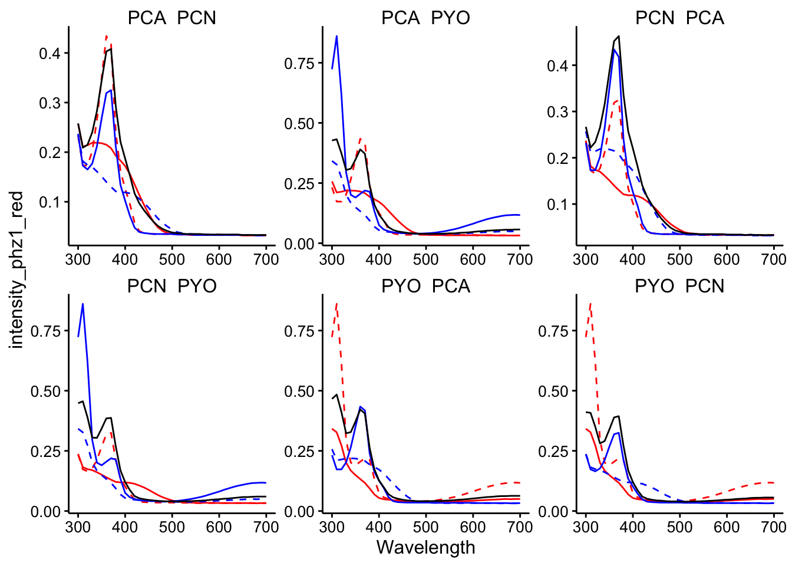
ggplot(df_spectra_meta %>% filter(red == "PBS" | ox == "PBS"),
aes(x = Wavelength, y = intensity, color = phz_redox)) +
geom_vline(xintercept = c(310, 360, 500, 690), color = "gray",
linetype = 2, alpha = 0.4) + geom_path() + facet_wrap(~phz,
scales = "free")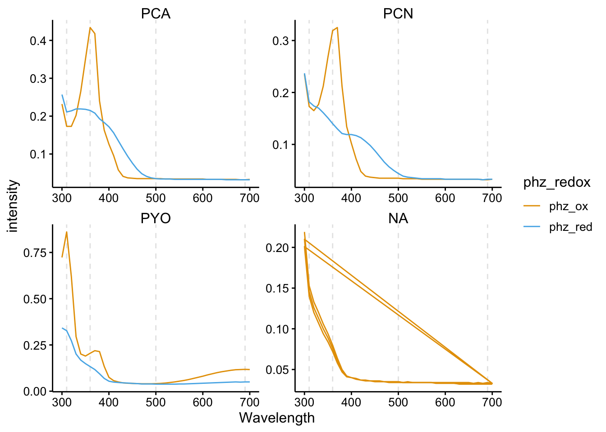
ggplot(df_spectra_meta %>% filter(red == "PBS" | ox == "PBS"),
aes(x = Wavelength, y = intensity, color = phz)) + geom_vline(xintercept = c(310,
360, 500, 690), color = "gray", linetype = 2, alpha = 0.4) +
geom_path() + facet_wrap(~phz_redox)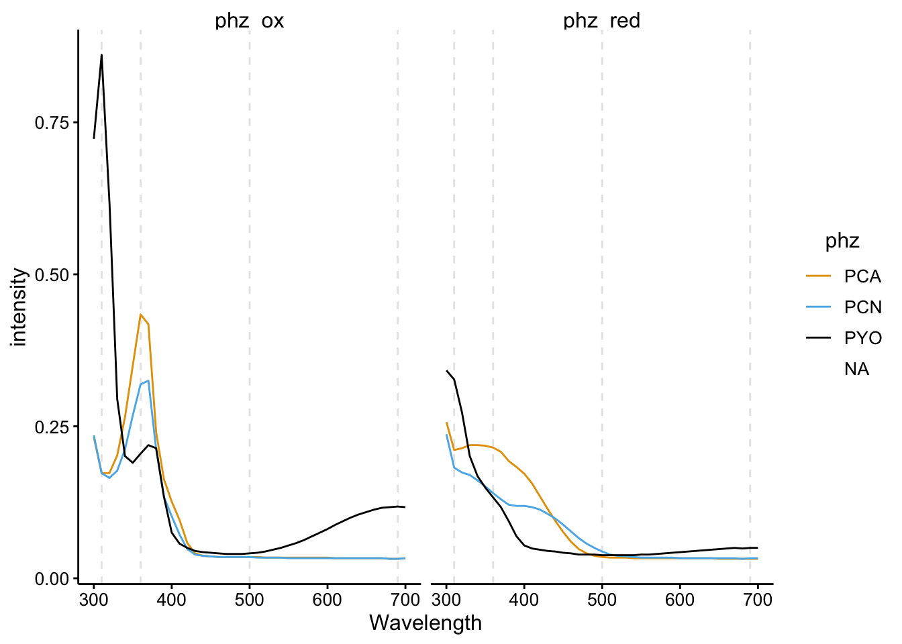
ggplot(df_spectra_meta %>% filter(red_ox == "PCA_PYO" | red_ox ==
"PBS_PYO" | red_ox == "PCA_PBS"), aes(x = Wavelength, y = intensity,
color = red_ox, group = rep)) + geom_vline(xintercept = c(310,
360, 500, 690), color = "gray", linetype = 2, alpha = 0.4) +
geom_point()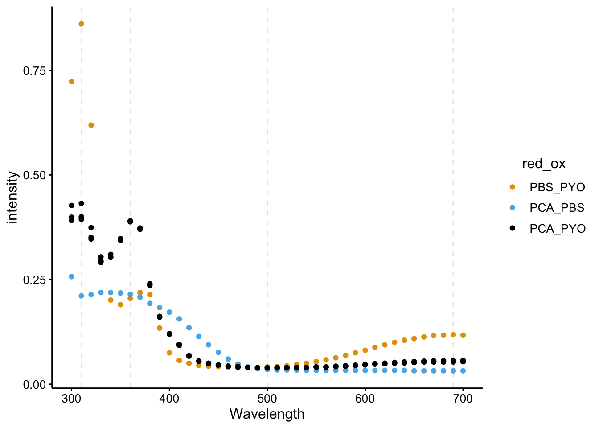
ggplot(df_spectra_meta %>% filter((red == "PBS" & (ox == "PCA" |
ox == "PYO")) | (ox == "PBS" & (red == "PCA" | red == "PYO")) |
red_ox == "PCA_PYO" & rep == 1), aes(x = Wavelength, y = intensity,
color = red_ox)) + geom_vline(xintercept = c(310, 360, 500,
690), color = "gray", linetype = 2, alpha = 0.4) + geom_path()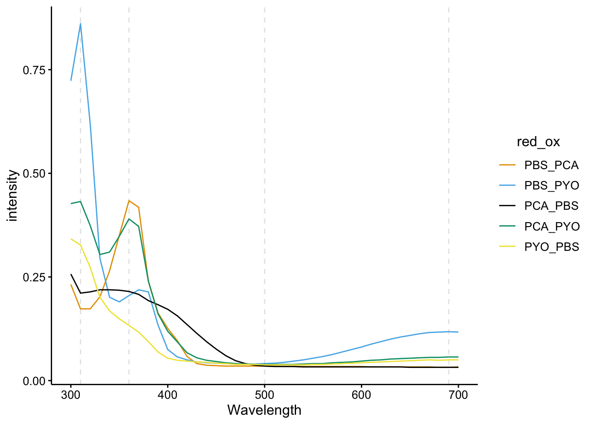
ggplot(df_spectra_meta %>% filter((red == "PBS" & (ox == "PCN" |
ox == "PYO")) | (ox == "PBS" & (red == "PCN" | red == "PYO")) |
red_ox == "PCN_PYO" & rep == 1), aes(x = Wavelength, y = intensity,
color = red_ox, linetype = phz_redox)) + geom_vline(xintercept = c(310,
360, 500, 690), color = "gray", linetype = 2, alpha = 0.4) +
geom_path()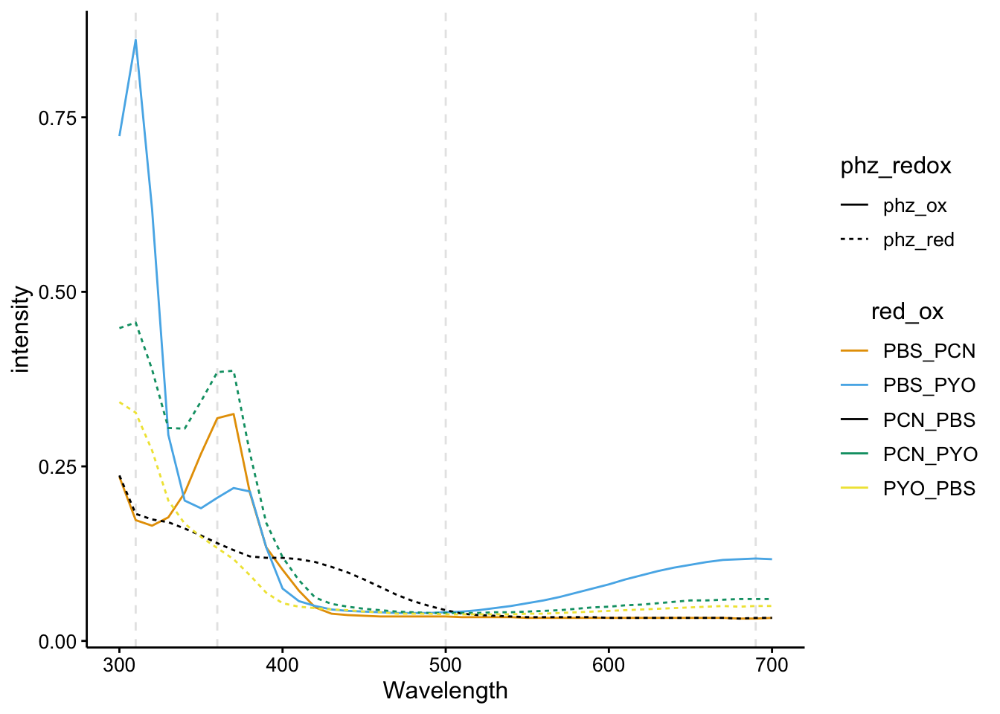
Kinetic run
df_kin <- read_csv("data/2019_09_17_solution_ET_init_kinetic_reads.csv",
skip = 1, ) %>% select(-`Kinetic read`) %>% gather(key = "well",
value = "intensity", -minutes, -wavelength)
df_kin <- left_join(df_kin, metadata, by = c("well"))Looking at these kinetic reads over the initial 2 minutes (following mixing, starting protocol and abs spectra), it seems like we aren’t observing a lot of change over this timescale. I think this means that the reactions either happen fast, before the measurement, or they are not going / proceeding very slowly.
em460
ggplot(df_kin %>% filter(wavelength == "em460"), aes(x = minutes,
y = intensity)) + geom_point() + geom_smooth(method = "lm",
se = F) + facet_grid(red ~ ox)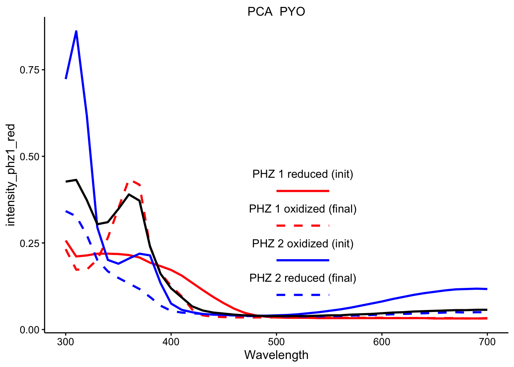
em528
ggplot(df_kin %>% filter(wavelength == "em528"), aes(x = minutes,
y = intensity)) + geom_point() + geom_smooth(method = "lm",
se = F) + facet_grid(red ~ ox)
abs310
ggplot(df_kin %>% filter(wavelength == "abs310"), aes(x = minutes,
y = intensity)) + geom_point() + geom_smooth(method = "lm",
se = F) + facet_grid(red ~ ox)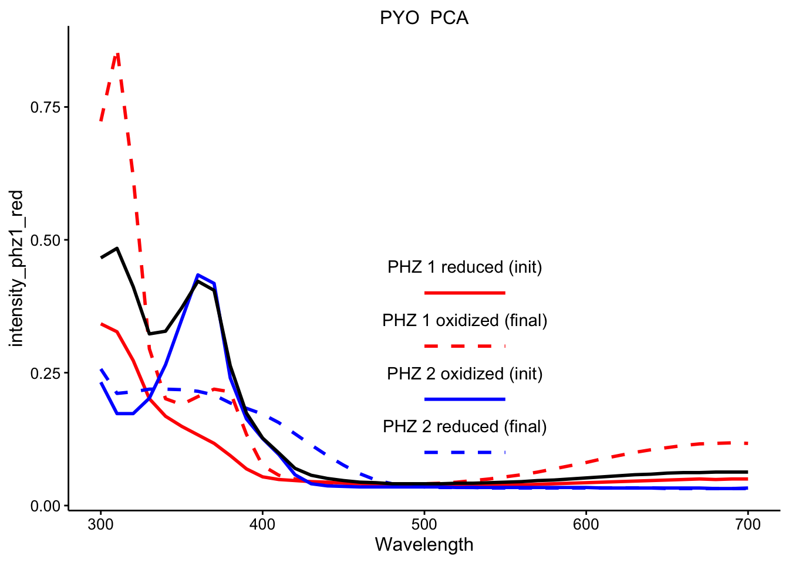
abs360
ggplot(df_kin %>% filter(wavelength == "abs360"), aes(x = minutes,
y = intensity)) + geom_point() + geom_smooth(method = "lm",
se = F) + facet_grid(red ~ ox)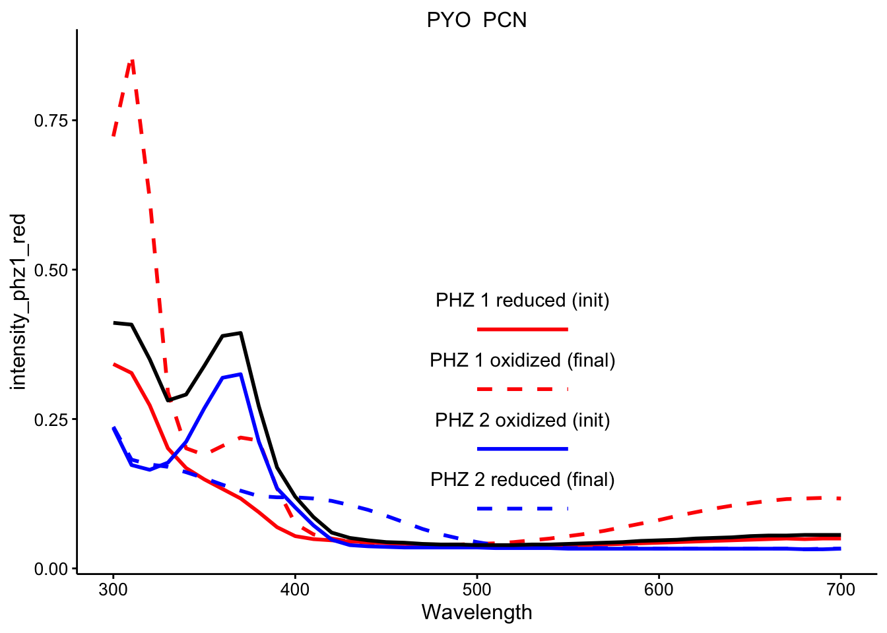
abs690
ggplot(df_kin %>% filter(wavelength == "abs690"), aes(x = minutes,
y = intensity)) + geom_point() + geom_smooth(method = "lm",
se = F) + facet_grid(red ~ ox)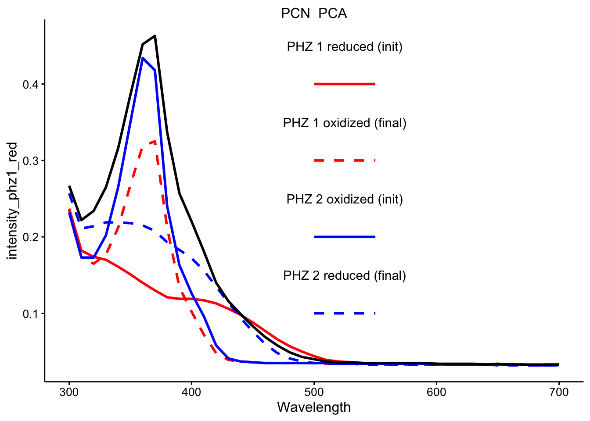
abs500
ggplot(df_kin %>% filter(wavelength == "abs500"), aes(x = minutes,
y = intensity)) + geom_point() + geom_smooth(method = "lm",
se = F) + facet_grid(red ~ ox)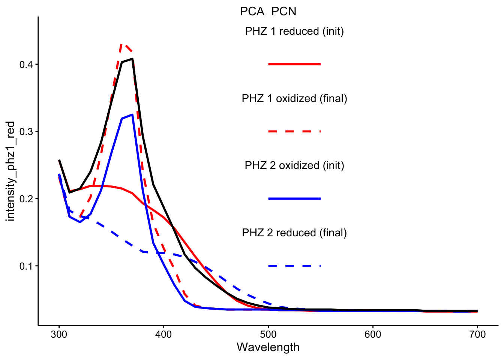
Quantifying points
df_per_rep <- df_kin %>% group_by(wavelength, red, ox, red_ox,
rep) %>% summarise(int_per_rep = mean(intensity, na.rm = T),
std_per_rep = sd(intensity, na.rm = T)) %>% mutate(std_per_rep = ifelse(is.na(std_per_rep),
0, std_per_rep))
ggplot(df_per_rep, aes(x = red_ox, y = int_per_rep)) + geom_pointrange(aes(ymin = int_per_rep -
std_per_rep, ymax = int_per_rep + std_per_rep)) + facet_wrap(~wavelength,
scales = "free")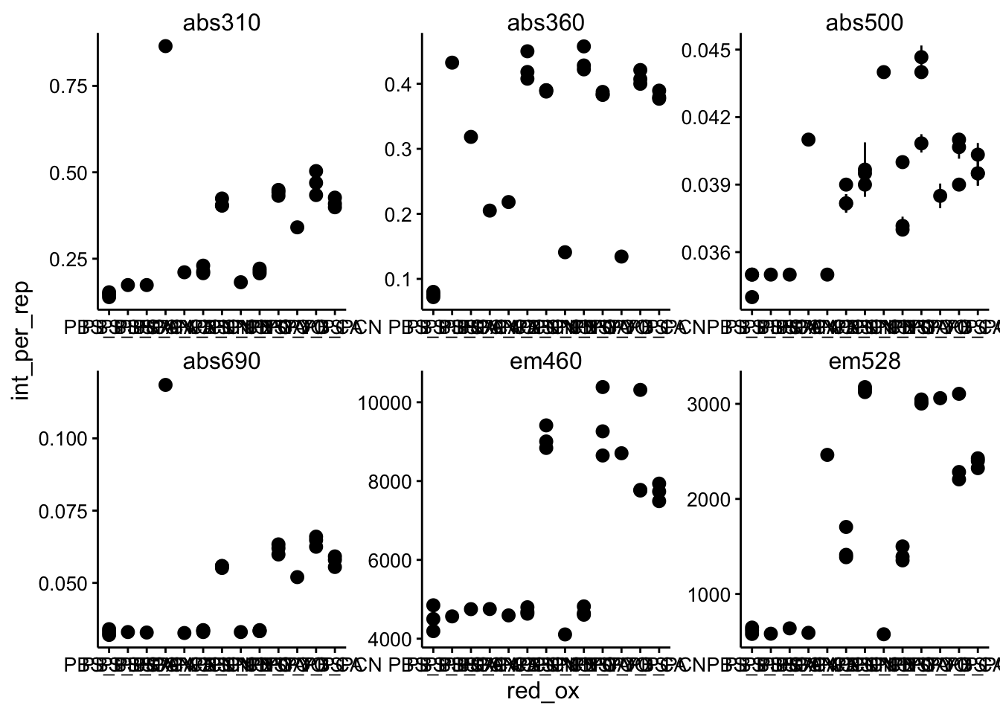
df_per_cond <- df_per_rep %>% group_by(wavelength, red, ox, red_ox) %>%
summarise(int_per_cond = mean(int_per_rep), std_per_cond = sd(int_per_rep)) %>%
mutate(std_per_cond = ifelse(is.na(std_per_cond), 0, std_per_cond))
ggplot(df_per_cond, aes(x = red_ox, y = int_per_cond)) + geom_hline(data = df_per_cond %>%
filter(red_ox == "PBS_PBS"), aes(yintercept = int_per_cond),
color = "gray") + geom_pointrange(aes(ymin = int_per_cond -
std_per_cond, ymax = int_per_cond + std_per_cond)) + facet_wrap(~wavelength,
scales = "free") + ylim(0, NA)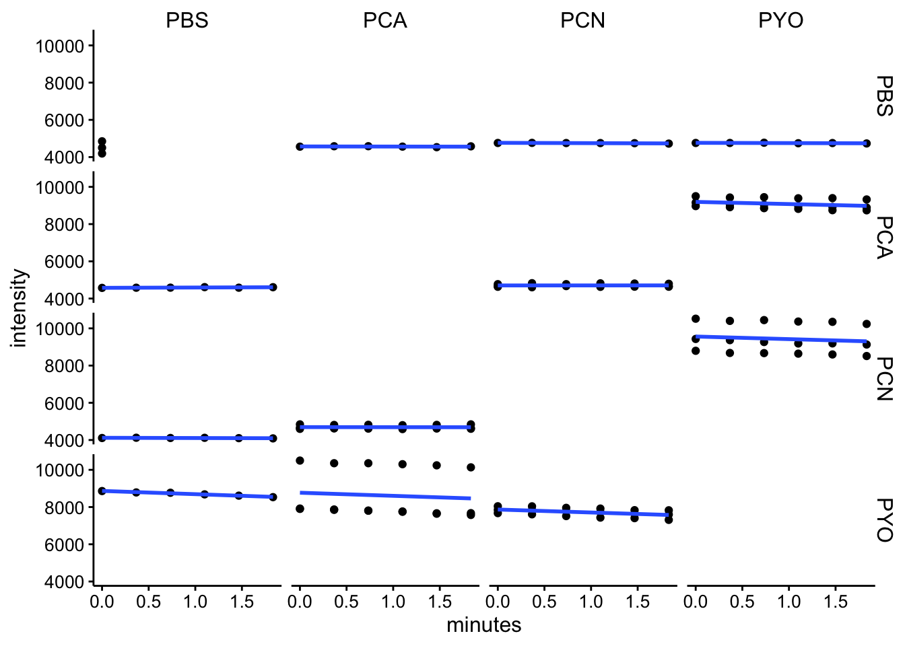
background subtract
df_bg_sub <- df_per_cond %>% group_by(wavelength) %>% mutate(bg = ifelse(red_ox ==
"PBS_PBS", int_per_cond, NA)) %>% mutate(bg_sub = int_per_cond -
mean(bg, na.rm = T))
ggplot(df_bg_sub, aes(x = red_ox, y = bg_sub)) + geom_hline(data = df_bg_sub %>%
filter(red_ox == "PBS_PBS"), aes(yintercept = bg_sub), color = "gray") +
geom_pointrange(aes(ymin = bg_sub - 2 * std_per_cond, ymax = bg_sub +
2 * std_per_cond)) + facet_wrap(~wavelength, scales = "free") # + ylim(0,NA)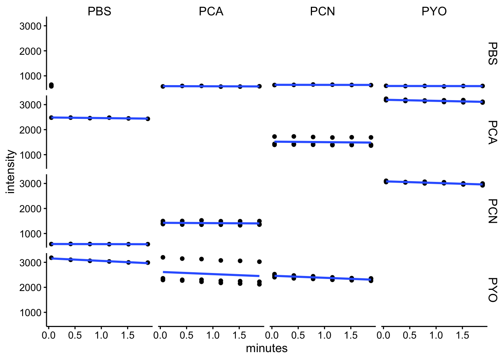
predictions
bg_sub_refs <- df_bg_sub %>% filter(str_detect(red_ox, "PBS")) %>%
filter(red_ox != "PBS_PBS")
bg_sub_phz1_red <- left_join(df_bg_sub %>% filter(!str_detect(red_ox,
"PBS")), bg_sub_refs, by = c("wavelength", "red"), suffix = c("",
"_from_phz1_red"))
bg_sub_phz1_ox <- left_join(bg_sub_phz1_red, bg_sub_refs, by = c("wavelength",
red = "ox"), suffix = c("", "_from_phz1_ox"))
bg_sub_phz2_ox <- left_join(bg_sub_phz1_ox, bg_sub_refs, by = c("wavelength",
"ox"), suffix = c("", "_from_phz2_ox"))
bg_sub_phz2_red <- left_join(bg_sub_phz2_ox, bg_sub_refs, by = c("wavelength",
ox = "red"), suffix = c("", "_from_phz2_red"))
bg_sub_redox <- bg_sub_phz2_red %>% mutate(pred_init = bg_sub_from_phz1_red +
bg_sub_from_phz2_ox, pred_final = bg_sub_from_phz1_ox + bg_sub_from_phz2_red)
ggplot(bg_sub_redox, aes(x = red_ox)) + geom_point(aes(y = pred_init),
color = "red") + geom_point(aes(y = pred_final), color = "blue") +
geom_pointrange(aes(y = bg_sub, ymin = bg_sub - 2 * std_per_cond,
ymax = bg_sub + 2 * std_per_cond), shape = 21) + facet_wrap(~wavelength,
scales = "free") # + ylim(0,NA)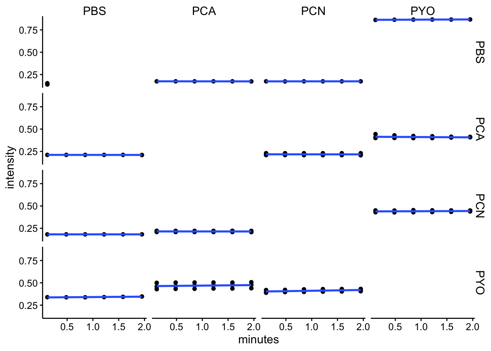
ggplot(bg_sub_redox %>% filter(red_ox == "PCA_PYO"), aes(x = red_ox)) +
geom_point(aes(y = pred_init), color = "red") + geom_point(aes(y = pred_final),
color = "blue") + geom_pointrange(aes(y = bg_sub, ymin = bg_sub -
2 * std_per_cond, ymax = bg_sub + 2 * std_per_cond), shape = 21) +
facet_wrap(~wavelength, scales = "free")
ggplot(bg_sub_redox %>% filter(red_ox == "PCN_PYO"), aes(x = red_ox)) +
geom_point(aes(y = pred_init), color = "red") + geom_point(aes(y = pred_final),
color = "blue") + geom_pointrange(aes(y = bg_sub, ymin = bg_sub -
2 * std_per_cond, ymax = bg_sub + 2 * std_per_cond), shape = 21) +
facet_wrap(~wavelength, scales = "free")
ggplot(bg_sub_redox %>% filter(red_ox == "PYO_PCN"), aes(x = red_ox)) +
geom_point(aes(y = pred_init), color = "red") + geom_point(aes(y = pred_final),
color = "blue") + geom_pointrange(aes(y = bg_sub, ymin = bg_sub -
2 * std_per_cond, ymax = bg_sub + 2 * std_per_cond), shape = 21) +
facet_wrap(~wavelength, scales = "free")
df_rxn_pct <- bg_sub_redox %>% mutate(rxn_range = abs(pred_final -
pred_init), rxn_ext = abs(bg_sub - pred_init)) %>% mutate(rxn_ext_high = abs((bg_sub +
2 * std_per_cond) - pred_init), rxn_ext_low = abs((bg_sub -
2 * std_per_cond) - pred_init)) %>% mutate(rxn_pct = rxn_ext/rxn_range,
rxn_pct_high = rxn_ext_high/rxn_range, rxn_pct_low = rxn_ext_low/rxn_range)
ggplot(df_rxn_pct, aes(x = red_ox, y = rxn_pct, color = wavelength)) +
geom_pointrange(aes(ymin = rxn_pct_low, ymax = rxn_pct_high),
position = position_jitter(height = 0, width = 0.1))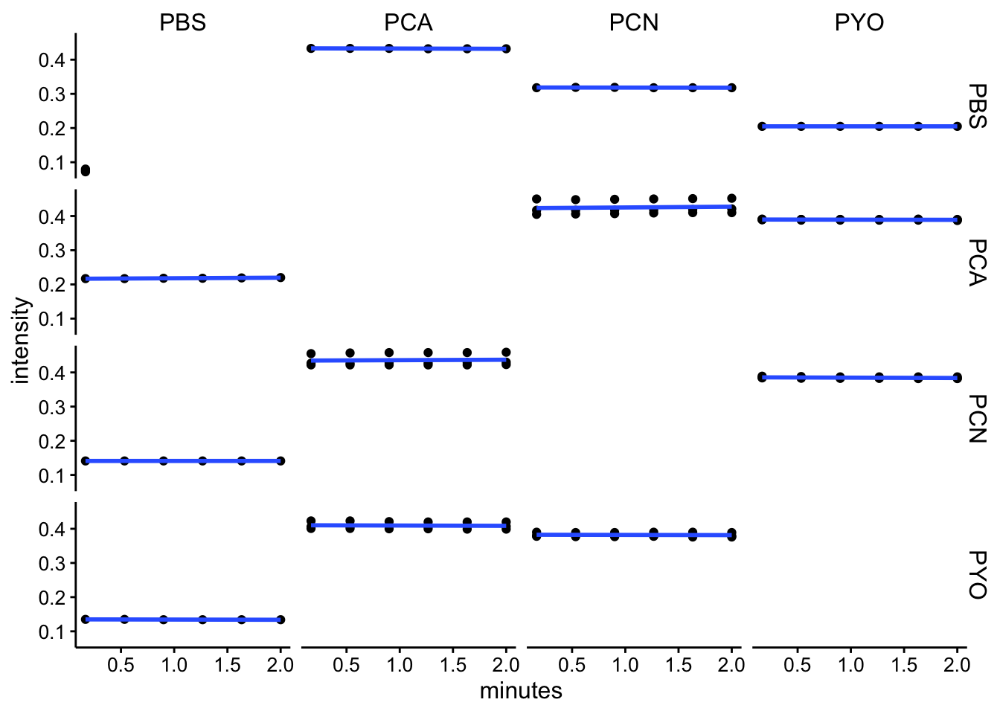
ggplot(df_rxn_pct %>% filter(ox == "PYO") %>% filter(!(wavelength %in%
c("abs360", "abs500"))), aes(x = red_ox, y = rxn_pct, color = wavelength)) +
geom_pointrange(aes(ymin = rxn_pct_low, ymax = rxn_pct_high),
position = position_jitter(height = 0, width = 0.1)) +
ylim(0, NA)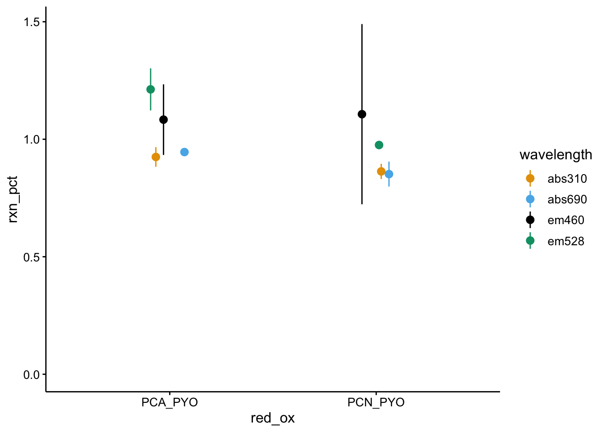
ggplot(df_rxn_pct %>% filter(red == "PYO") %>% filter(!(wavelength %in%
c("abs360", "abs500"))), aes(x = red_ox, y = rxn_pct, color = wavelength)) +
geom_pointrange(aes(ymin = rxn_pct_low, ymax = rxn_pct_high),
position = position_jitter(height = 0, width = 0.1)) +
ylim(0, NA)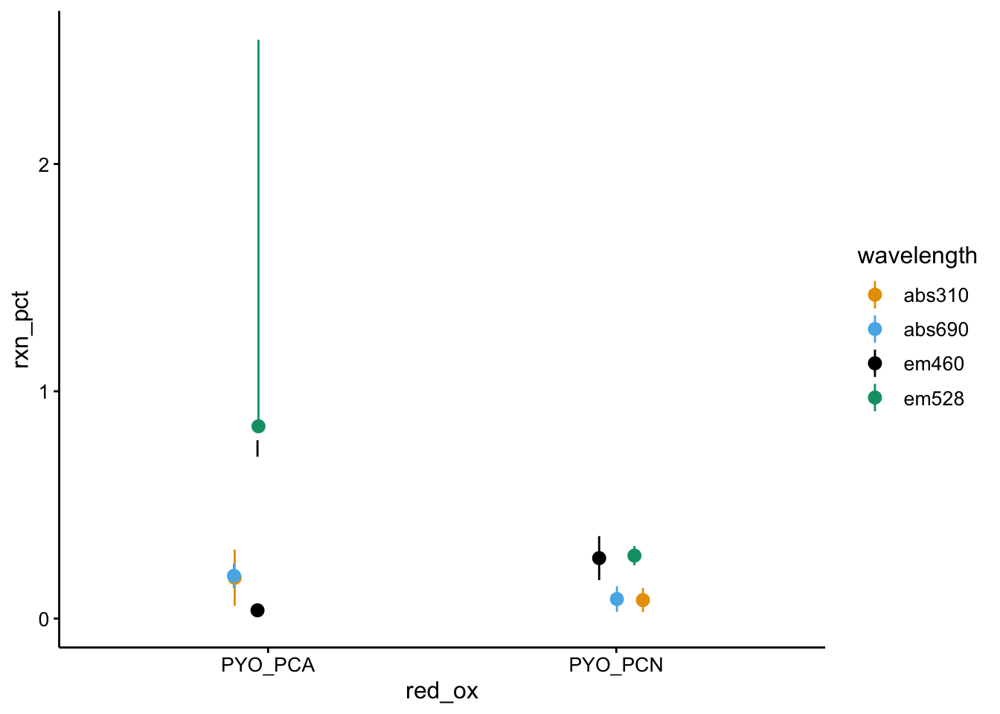
ggplot(df_rxn_pct %>% filter(red_ox == "PCN_PCA") %>% filter(!(wavelength %in%
c("abs360", "abs310", "abs690", "abs500"))), aes(x = red_ox,
y = rxn_pct, color = wavelength)) + geom_pointrange(aes(ymin = rxn_pct_low,
ymax = rxn_pct_high), position = position_jitter(height = 0,
width = 0.1)) + ylim(0, NA)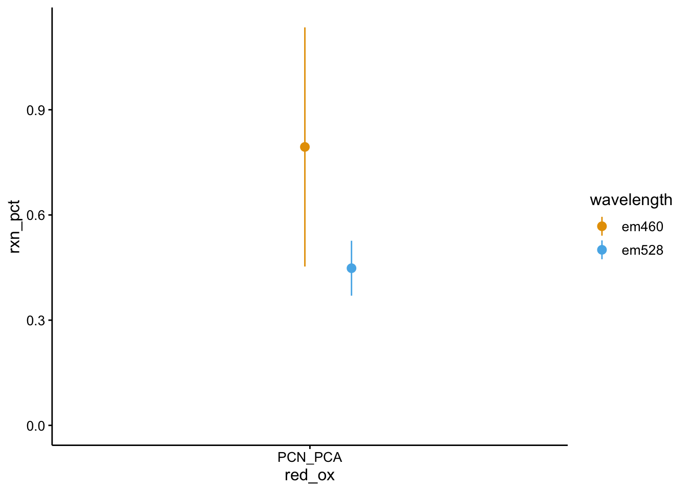
ggplot(df_rxn_pct %>% filter(red_ox == "PCA_PCN") %>% filter(!(wavelength %in%
c("abs310", "abs690", "abs360"))), aes(x = red_ox, y = rxn_pct,
color = wavelength)) + geom_pointrange(aes(ymin = rxn_pct_low,
ymax = rxn_pct_high), position = position_jitter(height = 0,
width = 0.1)) + ylim(0, 1)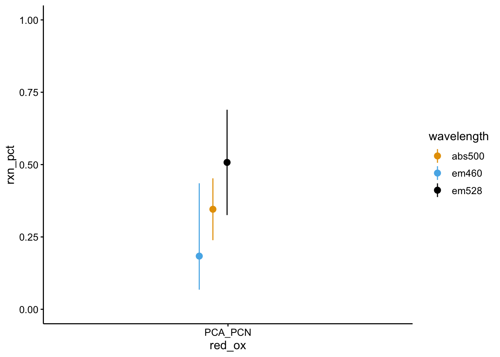
ggplot(df_rxn_pct %>% filter(red_ox == "PYO_PCN") %>% filter(!(wavelength %in%
c("abs500"))), aes(x = red_ox, y = rxn_pct, color = wavelength)) +
geom_pointrange(aes(ymin = rxn_pct_low, ymax = rxn_pct_high),
position = position_jitter(height = 0, width = 0.1)) +
ylim(0, 1)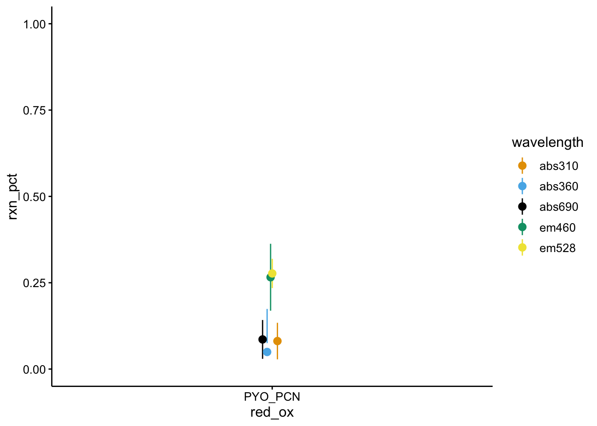 # Figure Draft
labels = c("PCA[red] + PYO[ox]", "PCN[red] + PYO[ox]", "PYO[red] + PCA[ox]",
"PYO[red] + PCN[ox]")
plot_rxn_pct <- ggplot(df_rxn_pct %>% filter(ox == "PYO" | red ==
"PYO") %>% filter(wavelength == "abs690"), aes(x = red_ox,
y = rxn_pct)) + geom_pointrange(aes(ymin = rxn_pct_low, ymax = rxn_pct_high),
position = position_jitter(height = 0, width = 0.1)) + scale_y_continuous(labels = scales::percent,
limits = c(0, 1)) + labs(y = "Reaction progress at 690nm",
x = NULL) + scale_x_discrete(labels = parse(text = labels)) +
theme(axis.text = element_text(size = 12))
plot_rxn_pct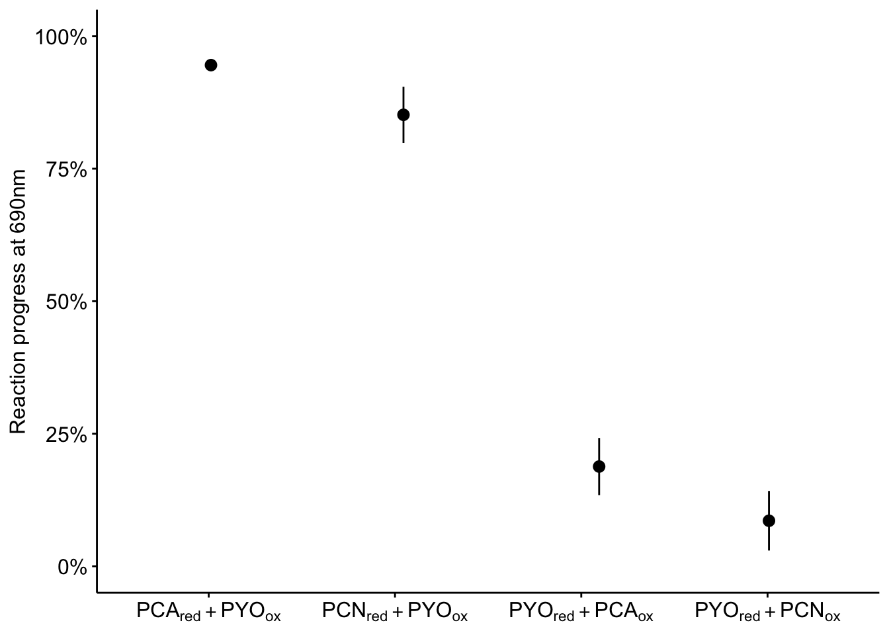 add predictions from nernst equation??
ggplot(df_spectra_meta %>% filter(red_ox == "PBS_PYO" | red_ox ==
"PYO_PBS"), aes(x = Wavelength, y = intensity, color = red_ox)) +
geom_vline(xintercept = 690, color = "gray", linetype = 2) +
geom_path()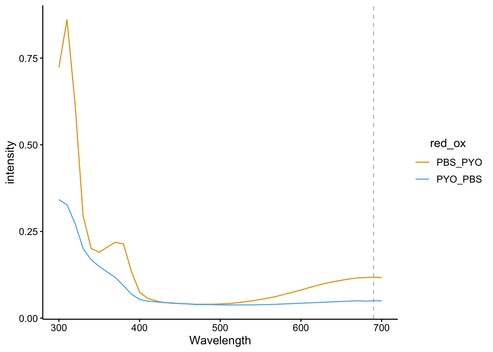
plot_pyo_ox <- ggplot(df_ref_4 %>% filter(rep == 1) %>% filter(ox ==
"PYO"), aes(x = Wavelength, color = red_ox, group = red_ox)) +
geom_vline(xintercept = 690, color = "gray", linetype = 2) +
geom_path(aes(y = intensity_phz2_ox), color = "black", linetype = 1) +
geom_path(aes(y = intensity_phz2_red), color = "black", linetype = 2) +
geom_path(aes(y = intensity), size = 1) + geom_segment(aes(x = 680,
xend = 680, y = 0.2, yend = 0.075), arrow = arrow(length = unit(0.05,
"inches"), type = "closed"), color = "black") + scale_color_manual(labels = parse(text = c("PCA[red] + PYO[ox]",
"PCN[red] + PYO[ox]")), values = colorblind_palette, name = NULL) +
labs(y = "Absorbance")
plot_pyo_ox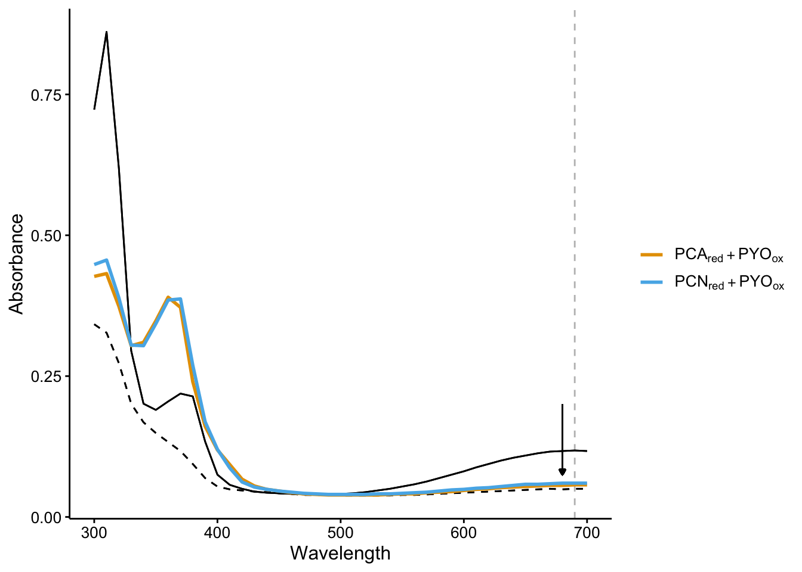
plot_pyo_red <- ggplot(df_ref_4 %>% filter(rep == 1) %>% filter(red ==
"PYO"), aes(x = Wavelength, color = red_ox, group = red_ox)) +
geom_vline(xintercept = 690, color = "gray", linetype = 2) +
geom_path(aes(y = intensity_phz1_ox), color = "black", linetype = 1) +
geom_path(aes(y = intensity_phz1_red), color = "black", linetype = 2) +
geom_path(aes(y = intensity), size = 1) + geom_segment(aes(x = 680,
xend = 680, y = 0.2, yend = 0.075), arrow = arrow(length = unit(0.05,
"inches"), type = "closed", ends = "first"), color = "black") +
scale_color_manual(labels = parse(text = c("PYO[red] + PCA[ox]",
"PYO[red] + PCN[ox]")), values = colorblind_palette,
name = NULL) + labs(y = "Absorbance")
plot_pyo_red
ggplot(df_spectra_meta %>% filter(rep == 1) %>% filter(exp ==
"ref" & red_ox != "PBS_PBS" & phz_redox == "phz_ox"), aes(x = Wavelength,
color = phz, group = red_ox)) + geom_path(data = df_spectra_meta %>%
filter(rep == 1 & red_ox == "PBS_PBS"), aes(x = Wavelength,
y = intensity), color = "gray") + geom_path(aes(y = intensity),
size = 1) + labs(color = NULL) + labs(y = "Absorbance")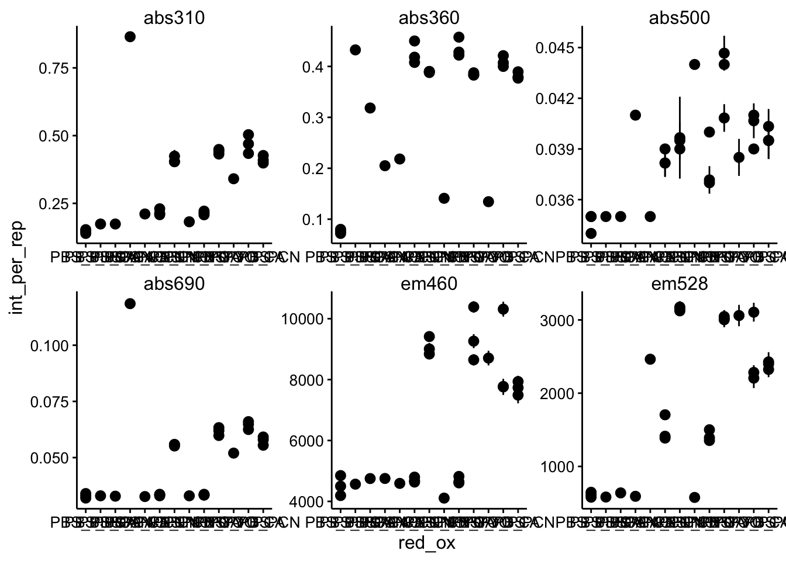
ggplot(df_spectra_meta %>% filter(rep == 1) %>% filter(exp ==
"ref" & red_ox != "PBS_PBS" & phz_redox == "phz_red"), aes(x = Wavelength,
color = phz, group = red_ox)) + geom_path(data = df_spectra_meta %>%
filter(rep == 1 & red_ox == "PBS_PBS"), aes(x = Wavelength,
y = intensity), color = "gray") + geom_path(aes(y = intensity),
size = 1) + labs(color = NULL) + labs(y = "Absorbance")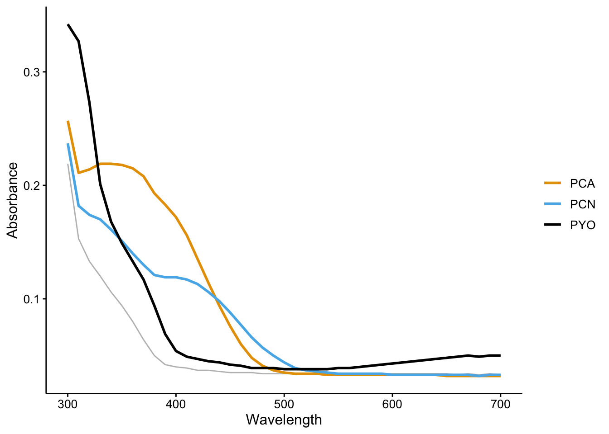
ggplot(bg_sub_redox %>% filter(wavelength == "abs690"), aes(x = red_ox)) +
geom_point(aes(y = pred_init), color = "red") + geom_point(aes(y = pred_final),
color = "blue") + geom_pointrange(aes(y = bg_sub, ymin = bg_sub -
2 * std_per_cond, ymax = bg_sub + 2 * std_per_cond), shape = 21)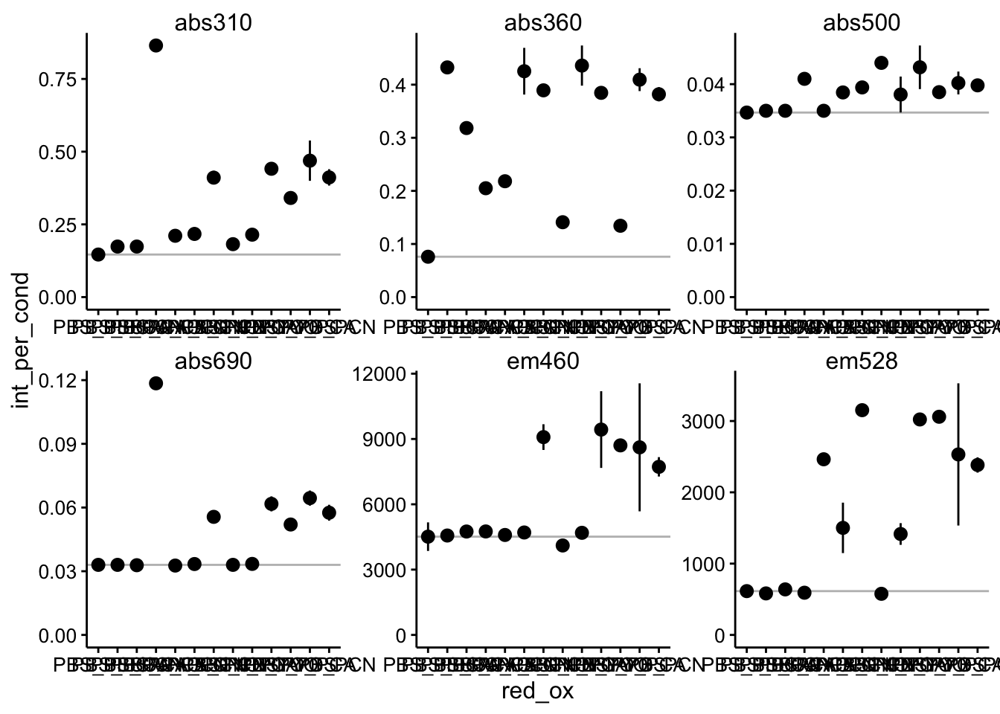
Conclusions
- PYO is rapidly reduced by PCA and PCN in solution
- PCN can kinda reduce PCA and vice versa
- PYO can reduce PCN and PCA a little…as expected from thermodynamics